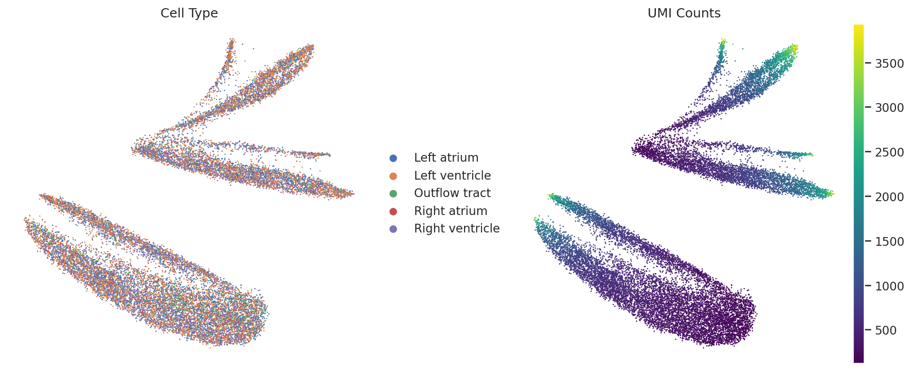
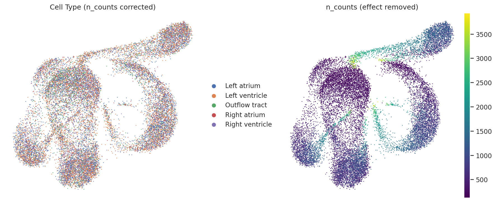
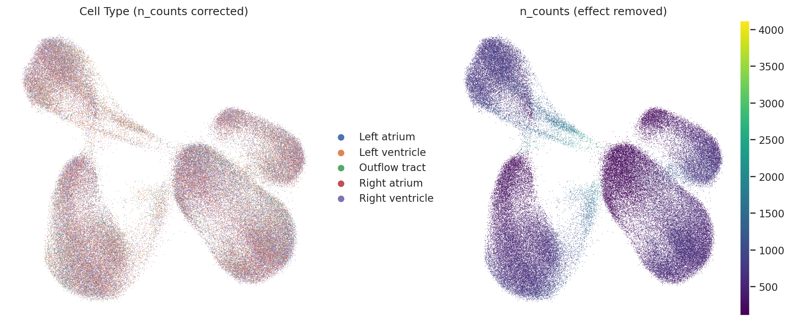

Project Report: 4D Virtual Heart
1. Data Processing & Model Architecture
🧬 Rapid Prototyping Strategy
To get a quick baseline given the short timeline, I used Geneformer. It is pretrained on human data, allowing me to start immediately without spending weeks training a foundation model from scratch.
Current Limitations
This is a preliminary demo, so there are a few technical trade-offs:
- Cross-Species Mapping: I mapped Mouse genes to Human IDs via homology. This introduces some noise since regulatory elements aren't always conserved.
- Tokenization Bias: The model uses rank-value encoding. As shown in the embedding analysis, this strategy creates a "Length Bias" (dependency on
n_counts) when used in zero-shot tasks. - Future Optimization: Moving to model architectures that treat expression profiles as structured/tabular inputs might help mitigate these depth-related artifacts.
🐁 The Dataset: 3D Mouse Heart (MOSTA)
The study utilizes the MOSTA (Mouse Organogenesis Spatiotemporal Transcriptomic Atlas) dataset [Chen et al., Cell 2022]. The analysis focuses on two critical developmental stages:
- E9.5: Characterized by heart looping and Outflow Tract (OFT) formation.
- E11.5: Characterized by ventricular septation and chamber maturation.
Interactive 3D Visualization
Below are the reconstructed 3D spatial maps of the heart samples processed in this workflow.
2. Embedding Space Analysis
🔍 Analysis of Embedding Bias
Without fine-tuning, the raw embeddings show a strong correlation with sequencing depth (n_counts). This is caused by the rank-value encoding strategy, where the sequence length relates directly to the total number of detected genes.
- Observation: In the raw UMAP, we see some initial geometric structures. However, the cell types are intermixed, and the main topology follows the gradient of total read counts (
n_counts). - Correction Method: I attempted to mitigate this by using a linear regression model to remove the variance explained by
log1p(n_counts). This reduced the depth effect to some extent. - Result & Interpretation: Post-correction, the embedding space revealed more complex manifolds. While
n_countsbias persists, the remaining structures likely encode orthogonal biological signals such as cell cycle phases or metabolic states. In rapidly proliferating embryonic tissues, these states are often biologically coupled with total RNA content, creating a complex signal that simple regression cannot fully disentangle without explicit biological supervision.
Embedding Visualization
Select a developmental stage to compare the embedding landscape before and after regression.
The distribution is dominated by the n_counts gradient.

Emergence of complex manifolds, though lineage separation requires further fine-tuning. 


3. Spatiotemporal In Silico Perturbation
I performed in silico deletion of key transcription factors to predict their functional impact on cardiac morphogenesis.
🎯 Gene Selection Rationale
- Nkx2-5 (The Validator): Essential for myocardial differentiation. Loss leads to Outflow Tract (OFT) defects (e.g., Tetralogy of Fallot). Selected to validate model sensitivity against known biology.
- Bmpr2 (The Disease Model): Critical for vascular endothelium. Mutations are linked to PAH. Selected to demonstrate relevance to vascular pathology.
- Tbx5 (The Spatial Control): Expressed specifically in the left ventricle and atria. Selected to test the spatial specificity of the predictions.
📊 Impact Score Definition
The "Impact Score" quantifies the phenotype shift caused by the perturbation. It is calculated as the cosine distance between the embedding vectors of the original cell (E_orig) and the perturbed cell (E_perturb):

A higher score indicates a significant loss or shift of cellular identity.
🔮 Interactive 3D Impact Map
Interactive Discovery: Isolate the OFT
For E9.5 Nkx2-5: The impact is highly localized. To visualize this clearly: Double-click on the 'Outflow Tract' label in the figure legend. This will isolate the OFT structure, revealing an intense concentration of high impact scores (red hotspot) that aligns with the etiology of Tetralogy of Fallot.
Prediction: Strong impact localized to the Outflow Tract (OFT).
Prediction: Localized impact on endothelial/endocardial populations.
Prediction: Impact concentrated in the primitive Atrium and Left Ventricle.
Prediction: Impact shifts towards the Ventricular Septum and chamber walls.
📈 Quantitative Analysis: Cell Type Vulnerability
To quantify the "Functional Shift" over developmental time, I aggregated the impact scores by annotated cell types.
Biological Interpretation: The Critical Window
The aggregated impact scores reveal a striking spatiotemporal dynamic for Nkx2-5:
At E9.5, the Nkx2-5 deletion yields the highest impact score (1.7e-5) specifically in the Outflow Tract (OFT), which is nearly 8x higher than in the Right Ventricle. This computationally recapitulates the "Critical Window" for OFT formation, identifying it as the most vulnerable structure to Nkx2-5 loss at this specific stage.
By E11.5, this focused impact dissipates (decreasing to 0.3e-5), mirroring the anatomical timeline where OFT morphogenesis concludes and septation begins.